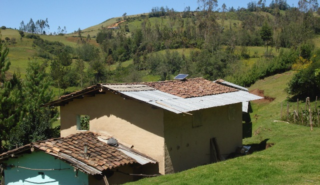

The post will be available in English at CGAP shortly.
Con esta entrada, iniciaremos una nueva serie de blogs en torno al XV Foromic que se llevará a cabo este año en Barbados del 1-3 de octubre. Durante las siguientes semanas, CGAP y el FOMIN le invitan a explorar innovaciones en temas de financiación y creación de mayores oportunidades para microempresarios y pequeñas empresas en América Latina y el Caribe. En este espacio discutiremos temas emergentes como: finanzas verdes, ahorros para jóvenes empresarios, soluciones de microfinanciación rural, protección de los consumidores de servicios financieros, entre otros.
Foromic 2012 es el Foro líder en el tema de financiamiento a microempresas, PYMES, y pequeños agricultores.
Frente al gran desafío que representa el cambio climático, parece existir una línea divisoria fundamental que separa las acciones de Países Desarrollados y Países en Desarrollo.
En el ámbito internacional, los Países Desarrollados han dirigido la mayoría de sus acciones, recursos y esfuerzos hacia la denominada mitigación del cambio climático – es decir, a reducir las emisiones de carbono a través del uso de tecnologías verdes: energía limpia y eficiencia energética- para frenar el calentamiento global y los futuros efectos adversos del mismo.
Por otro lado, los Países en Desarrollo, donde los efectos adversos del cambio climático ya representan costosos daños reales, dirigen sus esfuerzos hacia iniciativas para la la denominada adaptación al cambio climático -acciones que individuos, gobiernos y empresas pueden adoptar en respuesta o en anticipación de los cambios adversos del clima.
En mi último viaje a México y Nicaragua, visité hogares de bajos ingresos, micro empresarios, pequeñas y medianas empresas (MYPIMES) e instituciones de microfinanzas (IMF), y me quedé sorprendida al ver la claridad con la que los empresarios, agricultores y proveedores financieros pueden definir los efectos del cambio climático sobre su vida cotidiana, sus negocios y cultivos así como sobre sus carteras de préstamos.
Los clientes agrícolas de las IMF sufren cada vez más frecuentemente cambios inusuales en épocas de lluvias que reducen la producción de sus cultivos. Los clientes urbanos se ven afectados por inundaciones y sequías más frecuentes en regiones donde nunca antes se habían visto semejantes acontecimientos climáticos.

En el caso del Perú, las IMF recuerdan cómo inundaciones que ocurrieron a miles de kilómetros de distancia, causaron en 2009 interrupciones en el suministro eléctrico local afectando negativamente a los negocios de sus clientes. En ese año, las lluvias que inundaron el Valle Sagrado de los Incas causando daños físicos enormes en la infraestructura del país, también causaron cortes de electricidad en centrales eléctricas ubicadas en esa zona. Las MIPYMES de todo el país sufrieron interrupciones en el suministro eléctrico lo que dificultó el normal ejercicio de las actividades de sus empresas y por lo tanto dificultaron el pago puntual de sus préstamos. En Argentina, las olas de calor de los dos últimos veranos han puesto a prueba los límites de capacidad de la red eléctrica que se ha visto interrumpida frecuentemente en ciertas áreas, afectando la productividad e ingresos de muchos agricultores y productores de leche.
Las IMF que atienden a estos clientes, han visto cómo, a raíz de estos acontecimientos, el riesgo de su cartera de préstamos ha aumentado drásticamente. Por ello, ya comienzan a concebir el cambio climático como un riesgo adicional que deben monitorear de la misma manera que monitorean riesgos de insolvencia, de tipo de cambio o riesgos operacionales. De igual forma, las IMF quieren desarrollar nuevos productos financieros que den acceso a tecnologías que puedan ayudar a sus clientes a hacer frente a estos desafíos climáticos con mayor eficacia.
Si bien el apoyo de la comunidad internacional y los programas de gobierno serán cruciales para el éxito de las iniciativas de adaptación - las cuales se materializarán en acciones dirigidas a beneficiar, en última instancia, a estas mismas IMF y a sus clientes-, estos programas públicos necesitarán tiempo para tomar forma y poder alcanzar a las poblaciones más vulnerables.
Mientras tanto, las MIPYMES y las personas de bajos ingresos comienzan a utilizar cada vez más nuevas tecnologías (sobre todo tecnologías limpias o “verdes”) como herramientas que pueden ayudarles a adaptarse a los efectos del cambio climático. El uso de bombas solares de agua para el riego de los campos puede servir en casos de cambios en la secuencia de las lluvias o en la aparición de sequías transitorias. La utilización de dispositivos de energía renovable o la aplicación de medidas de eficiencia energética pueden mantener estable el suministro de energía para los pequeños y medianos negocios evitando interrupciones del servicio eléctrico y por lo tanto, manteniendo sus ingresos más estables.
Las IMF perciben esta evolución como una oportunidad para abrir nuevos mercados y reducir el riesgo climático de su cartera de préstamos. Por ello, están dispuestas a explorar la financiación de estas tecnologías verdes – o financiación “verde” - aunque se enfrentan a varios importantes desafíos.
Algunos de estos desafíos pueden superarse mediante el intercambio de conocimiento a través de asistencia técnica tanto para las IMF como para sus clientes. Los bancos multilaterales y donantes internacionales son actores clave en la transferencia de conocimiento y capacitación en tecnologías limpias y financiación verde y ya están implementando proyectos piloto en todo el mundo.
En el FOMIN nos encontramos actualmente implementando EcoMicro, un programa regional de finanzas verdes que tiene como objetivo precisamente la asistencia técnica para implementar productos de financiación verde en doce IMF de America Latina y el Caribe. Sin embargo, pese a estas iniciativas, el reto principal de la financiación verde sigue siendo el alto precio de muchas de estas tecnologías.
En el pasado, la mayoría de las iniciativas de tecnología verde dirigidas a individuos de bajos ingresos o a MIPYMES en la región incluyeron subsidios que, una vez eliminados, interrumpieron el desarrollo sostenible de ese mercado. Aunque el coste de las tecnologías verdes ha caído mucho en la última década, especialmente en la industria solar, esta disminución de coste no siempre se ve reflejada en los mercados de los países en desarrollo.
La principal razón de los altos precios de las tecnologías verdes es la falta de producción a escala suficiente para reducir los costos unitarios de manera significativa. Y sin embargo el principal factor para conseguir escala suficiente sólo puede provenir de las iniciativas de mitigación que los países desarrollados están impulsando en el ámbito internacional. En efecto, los más amplios recursos económicos y técnicos de que disponen dichas iniciativas pueden llegar facilitar la fabricación y el precio de subproductos/dispositivos/métodos inmediatamente utilizables por consumidores con pocos recursos de países en vías de desarrollo. Así veríamos cómo las acciones de gran envergadura protagonizadas por los países desarrollados para responder al cambio climático (tecnologías verdes y eficiencia energética) contribuyen directamente al éxito de pequeñas medidas de adaptación (inmediatamente prácticas) para los países en desarrollo.
De manera sorprendente y poco intuitiva, me atrevería a decir que también ocurre el fenómeno inverso. La magnitud y urgencia de la acción requerida en temas de adaptación mediante la utilización de dispositivos que utilicen energías renovables y eficiencia energética podría ampliar la demanda de tecnologías verdes de las poblaciones de ingresos reducidos y MIPYMES. El potencial de demanda existente en los países en desarrollo para estas tecnologías podría hacer que se alcanzara una escala suficiente para que el área de financiación verde sea sostenible sin necesidad de subsidios y podría además convertirse en un vigoroso estímulo para revitalizar las iniciativas internacionales en energías limpias y eficiencia energética. Este intercambio de papeles desvela el potencial de la financiación verde no sólo como medio de acceso a mayor escala de estas tecnologías sino como medio de acercamiento de posiciones de países desarrollados y países en desarrollo en la lucha contra el cambio climático.